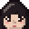
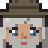
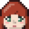

Vittoria Ricci
Vittoria Ricci é a dona do Gruppo Ricci, rede de restaurantes de National City. Trabalhou anos na cozinha dos outros, abriu a própria Trattoria e agora inaugura a sede. Não é chef: quem cozinha é a Dona Graça. É um dos dois romances do jogo.
Rotina
Dias úteis
| Hora | Lugar |
|---|---|
| 6h | Em casa |
| 7h | Mercado Central |
| 9h | Gruppo Ricci |
| 12h30 | Ricci Trattoria |
| 15h | Parque Central |
| 16h30 | Gruppo Ricci |
| 19h | Ricci Trattoria |
| 23h | Em casa |
Fim de semana
| Hora | Lugar |
|---|---|
| 6h | Em casa |
| 8h | Praia |
| 11h | Ricci Trattoria |
| 23h | Em casa |
Dia de chuva
| Hora | Lugar |
|---|---|
| 6h | Em casa |
| 9h | Gruppo Ricci |
| 19h | Ricci Trattoria |
| 23h | Em casa |
Com encontro marcado, a agenda das 19h às 22h é o encontro.
Presentes
No aniversário (11 de Verão), o presente vale mais: amado ×5, gostou ×3 e neutro ×2.
| Reação | Itens |
|---|---|
| Ama +80 pontos | |
| Gosta +45 pontos | |
| Neutro +20 pontos | Todo o resto (coletáveis e itens comuns) |
| Não gosta −20 pontos |
Eventos de coração
| Corações | Evento | Onde e quando | O que ganha |
|---|---|---|---|
| ♥ 1 | Vittoria: a mesa reservada | Ricci Trattoria, das 11h às 17h | Presente: |
| ♥ 2 | Vittoria: o escritório | Gruppo Ricci, das 7h30 às 13h30 | Café por conta da Vittoria: um café grátis por dia na Ricci Trattoria. |
| ♥ 4 | Vittoria: família Ricci | Mercado Central, das 6h às 10h10 | Família Ricci: 20% de desconto na Trattoria. |
| ♥ 5 | Vittoria: a inauguração às 6h | gruppo Ricci, 6h da manhã, das 6h às 9h10 | Presente: |
| ♥ 6 | Vittoria: o caderno da nonna | Ricci Trattoria, das 20h10 às 1h30 | Presente: |
| ♥ 7 | Vittoria: a mesa da Letícia | Ricci Trattoria, das 20h20 às 1h30 | — |
| ♥ 8 | Vittoria: no parque | uma tarde no parque, das 12h20 às 18h20 | — |
| ♥ 10 | Vittoria: manhã na praia | manhã na praia, das 6h às 10h30 | — |
Falas
“Buongiorno! Mesa pra uma? Ah, você é a famosa Letícia Luthor. Che piacere!”
Logo que se conhecem
“Passo no Mercado Central toda manhã às sete. A Bea guarda os melhores tomates pra Trattoria.”
Com amizade
“Quando você entra no restaurante, eu esqueço o que ia dizer pros investidores. Isso nunca acontece. Mai!”
Bem próximas
Mensagens no celular
Com 2 corações, ela manda mensagens de vez em quando (app Mensagens, tecla T). Responder dá amizade e carisma.
Ver as 12 mensagens e as respostas
Provei 14 molhos hoje. Minha língua pediu demissão. Me salva com um jantar sem tomate?
- Jantar sem tomate, prometo. Te busco às 20h. → Às 20h. Vou estar pronta e morrendo de fome.
- Qual dos 14 ganhou? → O da Dona Graça, claro. Sempre o da Dona Graça. Não conta pra ninguém.
- Que tal um sushi? → Sushi! Você é um gênio. E eu sou uma italiana muito traidora.
A Dona Graça disse que você come pouco. Ela mandou eu te alimentar. Eu obedeço a Dona Graça.
- Então pode me alimentar. Eu deixo. → Hoje à noite, na Trattoria. Mesa da varanda. Sem desculpas.
- Eu como bem! Às vezes. → 'Às vezes' não é resposta que a Dona Graça aceite. Nem eu.
- Todo mundo obedece a Dona Graça. → Até o fogão. Juro. Ele acende mais rápido quando ela chega.
Inauguramos mais uma mesa na varanda. Ela tem a melhor vista. Está reservada pra você.
- Hoje à noite eu passo lá. → Vou acender a velinha. E escolher o vinho. Você escolhe a sobremesa.
- A melhor vista é a de quem está na mesa. → Letícia Luthor, você aprendeu a flertar por mensagem?
- Que orgulho de você, Vittoria. → Grazie. Ouvir isso de você vale mais que qualquer crítica.
O fornecedor de queijo chegou atrasado e eu sorri. Isso é amor ou cansaço? Preciso da sua opinião.
- Amor. Pelo queijo. → Pelo queijo, claro. O que mais seria?
- Cansaço. Vai descansar. → Descansar? Que palavra bonita. Vou procurar no dicionário.
- Os dois. Vem jantar comigo. → Sì. Hoje eu saio na hora. Prometo. Quase.
Minha nonna ligou de Nápoles perguntando se eu já trouxe 'a moça da Luthor' para conhecer a família.
- Diz que eu vou no Natal. → Ela vai cozinhar por três dias. Você foi avisada.
- Ela sabe de mim? → Ela sabe de tudo. A minha mãe conta. A minha tia confirma.
- Manda um beijo pra ela. → Mandei. Ela mandou de volta uma receita. É uma indireta.
Assinei o contrato de mais um restaurante hoje. O primeiro brinde é seu. Hoje à noite?
- Hoje à noite. Com vinho. → Já separei o Barolo. O bom. O que eu não divido.
- Estou orgulhosa de você. → Grazie. Ouvir isso de você vale mais que o contrato.
- O brinde é nosso. → Nosso. Gostei como isso soa.
Bom dia (namorando)
Buongiorno, amore. O dia está lindo. Você também, imagino.
- Buongiorno! Você imagina certo. → Eu sei. Eu sempre imagino certo.
- Lindo mesmo é o seu bom-dia. → Ah, Letícia. Assim eu chego atrasada na reunião.
- Café da manhã juntas amanhã? → Sim! Eu levo o pão, você leva a pressa.
Bom dia! Hoje o cardápio tem uma surpresa pra você. Não pergunta.
- Não vou perguntar. Mas tem chocolate? → Não pergunta, eu disse! ...Tem.
- Eu adoro surpresas suas. → Então essa você vai adorar. Às 20h.
- Você sabe que eu vou adivinhar. → Tenta. Ninguém adivinha a Dona Graça.
Buongiorno! Já tomou café? Se não tomou, eu fico brava. Bravinha.
- Já tomei! Cappuccino do Harry. → Brava! Em italiano isso é elogio. Hoje eu não fico brava.
- Ainda não... não fica brava. → Já estou bravinha. Corre tomar.
- Você bravinha deve ser linda. → Para. Agora eu fiquei vermelha e brava ao mesmo tempo.
Buongiorno! Acordei com cheiro de pão e pensei em você. Não sei qual dos dois é mais gostoso.
- Buongiorno. Eu, obviamente. → Obviamente. O pão ficou com ciúmes.
- Guarda um pão pra mim. → Já guardei. Com manteiga, do jeito que você gosta.
- Que bom dia lindo. → Ficou lindo depois que você respondeu.
Bom dia, amore. Hoje tenho seis reuniões e só uma vontade: almoçar com você.
- Então almoça comigo. → Às 13h, na Trattoria. A Dona Graça já sabe.
- Seis reuniões? Coragem. → Coragem eu tenho. Paciência é que está acabando.
- Eu também tenho vontade. → Viu? A gente combina até nisso.
Buongiorno! Vi o nascer do sol da varanda e lembrei que prometi te mostrar. Amanhã, às 6h?
- Às 6h? Por você, sim. → Vou fazer café. Bem forte. Para nós duas.
- Me manda uma foto hoje. → Mandei. Mas ao vivo é melhor. Fica a promessa.
- Que tal ver o pôr do sol? → Também serve. Contanto que seja com você.
Retratos
| Luthor Corp | |
|---|---|
| CatCo |  Nia |
| Moradores |  Joca |
| Conti Moretti |  Addison |
| De fora da cidade |